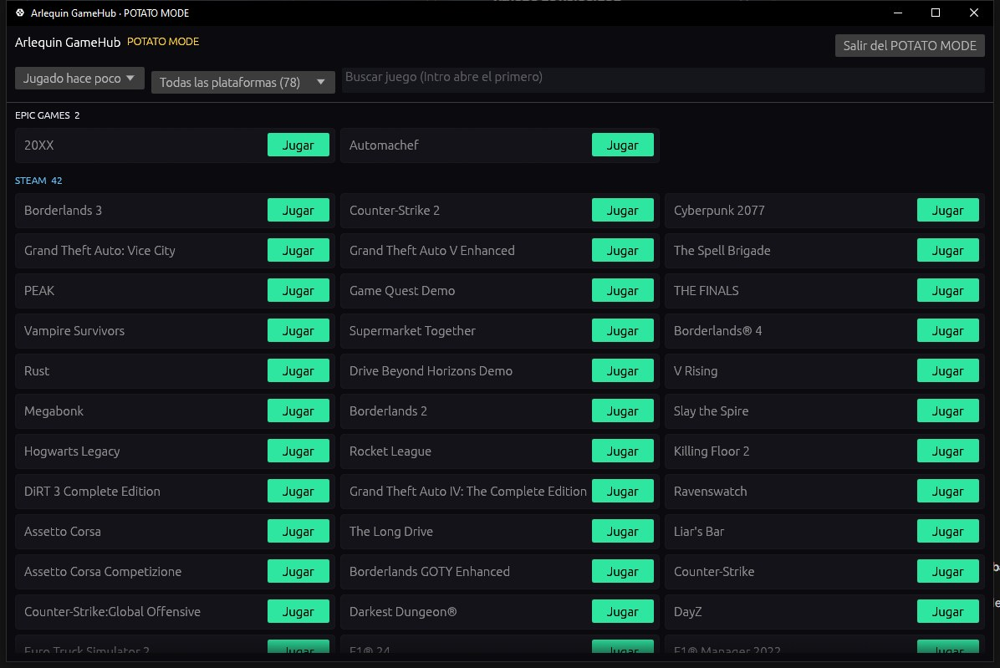

POTATO MODE
Dla PC-tów z małą ilością zasobów: GameHub w ultralekkim natywnym oknie.
POTATO MODE uruchamia GameHub ponownie bez interfejsu webowego (bez przeglądarki w środku): tylko twoje gry i przycisk, by zagrać. Zużywa znacznie mniej pamięci, nadal tworzy kopie twoich zapisów i liczy twoje godziny.
POTATO MODE+ (ArlequinPro) idzie jeszcze dalej: tylko launcher, nic w tle, więc cały twój komputer jest dla gry.
Okno POTATO MODE jest rysowane przez procesor, bez użycia karty graficznej: w sumie GameHub zużywa około 66 MB pamięci (440 MB w trybie normalnym) i zero pamięci wideo. Zwykły interfejs też zużywa teraz dużo mniej pamięci i GPU niż wcześniej, zwłaszcza przy wielu grach lub gdy GameHub jest zminimalizowany.
Jak z tego korzystać
- Przycisk „POTATO MODE” w panelu bocznym (oraz „+” dla POTATO MODE+).
- W Opcje → Wydajność możesz ustawić, by zawsze startował w ten sposób, i wybrać którym trybem.
- Gdy otwierasz grę, GameHub sam przełącza się na POTATO MODE (zamyka swoje okno i czat, by zostawić wszystko grze) i po jej zamknięciu wraca do stanu sprzed gry. W Opcje → Podczas gry wybierasz, czy zamyka okno i czy rozłącza czat (na przykład, by zostać na rozmowie na Discordzie).
- GameHub wraca od razu po zamknięciu gry, a przełączanie na POTATO MODE przy otwarciu gry możesz wyłączyć w Opcje → Wydajność.

Normalny, POTATO MODE i POTATO MODE+, zmierzone
Zmierzone na komputerze twórcy GameHub (Ryzen 7 9800X3D, Radeon RX 9070 XT, 64 GB RAM) przy 62 zainstalowanych grach: zwykły GameHub w Bibliotece pokazujący tylko zainstalowane gry, w porównaniu z POTATO MODE i POTATO MODE+, z widocznym oknem i bez dotykania czegokolwiek (średnia z 90 sekund).
| Normalny (Biblioteka) | POTATO MODE | POTATO MODE+ | |
|---|---|---|---|
| RAM | 440 MB | 66 MB (−85 %) | 57 MB (−87 %) |
| Pamięć wideo | 209 MB | 0 MB | 0 MB |
| Procesor | 0.4 % | 0.01 % | 0 % |
| Karta graficzna | 0.7 % | 0 % | 0 % |
| Otwarte procesy | 7 | 2 | 2 |
Liczone są tylko GameHub i jego wbudowana przeglądarka. Liczby mogą się różnić na twoim komputerze, ale różnica jest podobna.
Chcesz spróbować?
⬇ Pobierz bezpośrednio 🛍️ Pobierz ze sklepu Microsoft StoreWindows 10 i 11 (64-bit) · Za darmo · Aktualizuje się sam